Chapter 3 A grammar for graphics
In Chapter 2, we presented a taxonomy for understanding data graphics. In this chapter, we illustrate how the ggplot2 package can be used to create data graphics. Other packages for creating static, two-dimensional data graphics in R include base graphics and the lattice system. We employ the ggplot2 system because it provides a unifying framework—a grammar—for describing and specifying graphics. The grammar for specifying graphics will allow the creation of custom data graphics that support visual display in a purposeful way. We note that while the terminology used in ggplot2 is not the same as the taxonomy we outlined in Chapter 2, there are many close parallels, which we will make explicit.
3.1 A grammar for data graphics
The ggplot2 package is one of the many creations of prolific R programmer Hadley Wickham. It has become one of the most widely-used R packages, in no small part because of the way it builds data graphics incrementally from small pieces of code.
In the grammar of ggplot2, an aesthetic is an explicit mapping between a variable and the visual cues that represent its values. A glyph is the basic graphical element that represents one case (other terms used include “mark” and “symbol”). In a scatterplot, the positions of a glyph on the plot—in both the horizontal and vertical senses—are the visual cues that help the viewer understand how big the corresponding quantities are. The aesthetic is the mapping that defines these correspondences. When more than two variables are present, additional aesthetics can marshal additional visual cues. Note also that some visual cues (like direction in a time series) are implicit and do not have a corresponding aesthetic.
For many of the chapters in this book, the first step in following these examples will be to load the mdsr package, which contains many of the data sets referenced in this book. In addition, we load the tidyverse package, which in turn loads dplyr and ggplot2. (For more information about the mdsr package see Appendix A. If you are using R for the first time, please see Appendix B for an introduction.)
library(mdsr)
library(tidyverse)If you want to learn how to use a particular command, we highly recommend running the example code on your own.
We begin with a data set that includes measures that are relevant to answer questions about economic productivity.
The CIACountries data table contains seven variables collected for each of 236 countries: population (pop), area (area), gross domestic product (gdp), percentage of GDP spent on education (educ), length of roadways per unit area (roadways), Internet use as a fraction of the population (net_users), and the number of barrels of oil produced per day (oil_prod).
Table 3.1 displays a selection of variables for the first six countries.
| country | oil_prod | gdp | educ | roadways | net_users |
|---|---|---|---|---|---|
| Afghanistan | 0 | 1900 | NA | 0.065 | >5% |
| Albania | 20510 | 11900 | 3.3 | 0.626 | >35% |
| Algeria | 1420000 | 14500 | 4.3 | 0.048 | >15% |
| American Samoa | 0 | 13000 | NA | 1.211 | NA |
| Andorra | NA | 37200 | NA | 0.684 | >60% |
| Angola | 1742000 | 7300 | 3.5 | 0.041 | >15% |
3.1.1 Aesthetics
In the simple scatterplot shown in Figure 3.1, we employ the grammar of graphics to build a multivariate data graphic. In ggplot2, the ggplot() command creates a plot object g, and any arguments to that function are applied across any subsequent plotting directives. In this case, this means that any variables mentioned anywhere in the plot are understood to be within the CIACountries data frame, since we have specified that in the data argument. Graphics in ggplot2 are built incrementally by elements. In this case, the only glyphs added are points, which are plotted using the geom_point() function. The arguments to geom_point() specify where and how the points are drawn. Here, the two aesthetics (aes()) map the vertical (y) coordinate to the gdp variable, and the horizontal (x) coordinate to the educ variable. The size argument to geom_point() changes the size of all of the glyphs. Note that here, every dot is the same size. Thus, size is not an aesthetic, since it does not map a variable to a visual cue.
Since each case (i.e., row in the data frame) is a country, each dot represents one country.
g <- ggplot(data = CIACountries, aes(y = gdp, x = educ))
g + geom_point(size = 3)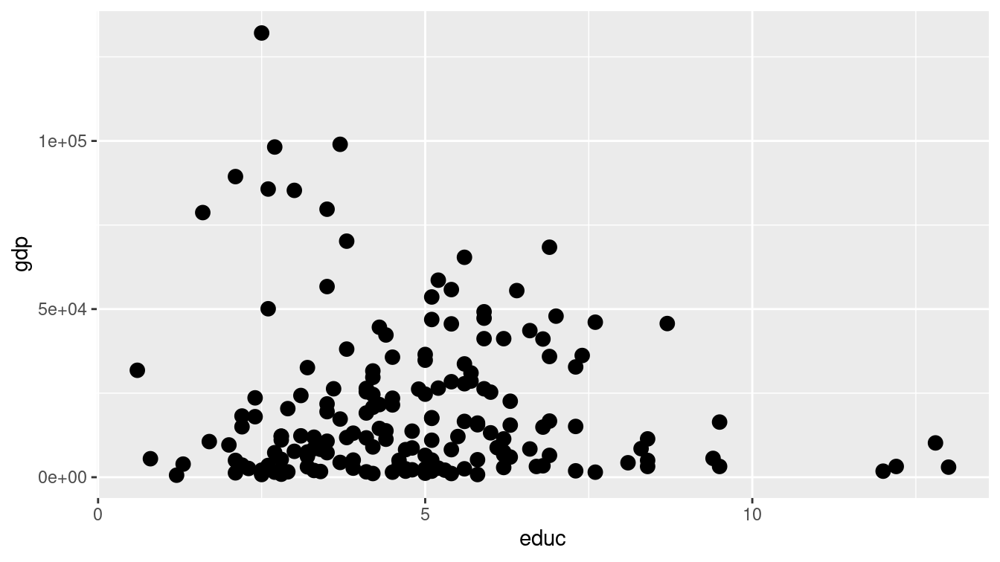
Figure 3.1: Scatterplot using only the position aesthetic for glyphs.
In Figure 3.1 the glyphs are simple. Only position in the frame distinguishes one glyph from another. The shape, size, etc. of all of the glyphs are identical—there is nothing about the glyph itself that identifies the country.
However, it is possible to use a glyph with several attributes. We can define additional aesthetics to create new visual cues.
In Figure 3.2, we have extended the previous example by mapping the color of each dot to the categorical net_users variable.
g + geom_point(aes(color = net_users), size = 3)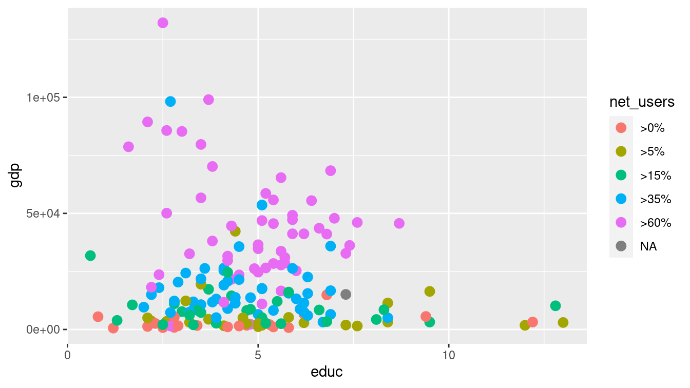
Figure 3.2: Scatterplot in which net_users is mapped to color.
Changing the glyph is as simple as changing the function that draws that glyph—the aesthetic can often be kept exactly the same. In Figure 3.3, we plot text instead of a dot.
g + geom_text(aes(label = country, color = net_users), size = 3)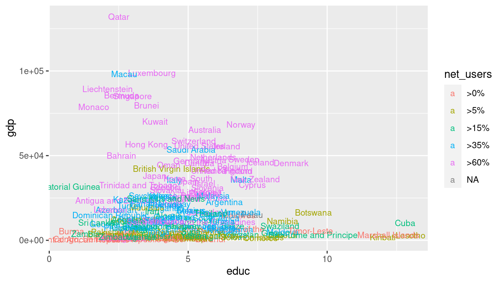
Figure 3.3: Scatterplot using both location and label as aesthetics.
Of course, we can employ multiple aesthetics. There are four aesthetics in Figure 3.4.
Each of the four aesthetics is set in correspondence with a variable—we say the variable is mapped to the aesthetic.
Educational attainment is being mapped to horizontal position, GDP to vertical position, Internet connectivity to color, and length of roadways to size.
Thus, we encode four variables (gdp, educ, net_users, and roadways) using the visual cues of position, position, color, and area, respectively.
g + geom_point(aes(color = net_users, size = roadways))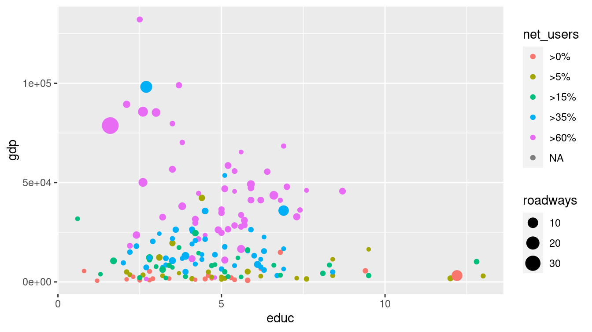
Figure 3.4: Scatterplot in which net_users is mapped to color and educ mapped to size. Compare this graphic to Figure 3.7, which displays the same data using facets.
A data table provides the basis for drawing a data graphic. The relationship between a data table and a graphic is simple: Each case (row) in the data table becomes a mark in the graph (we will return to the notion of glyph-ready data in Chapter 6). As the designer of the graphic, you choose which variables the graphic will display and how each variable is to be represented graphically: position, size, color, and so on.
3.1.2 Scales
Compare Figure 3.4 to Figure 3.5.
In the former, it is hard to discern differences in GDP due to its right-skewed distribution and the choice of a linear scale. In the latter, the logarithmic scale on the vertical axis makes the scatterplot more readable.
Of course, this makes interpreting the plot more complex, so we must be very careful when doing so.
Note that the only difference in the code is the addition of the coord_trans() directive.
g +
geom_point(aes(color = net_users, size = roadways)) +
coord_trans(y = "log10")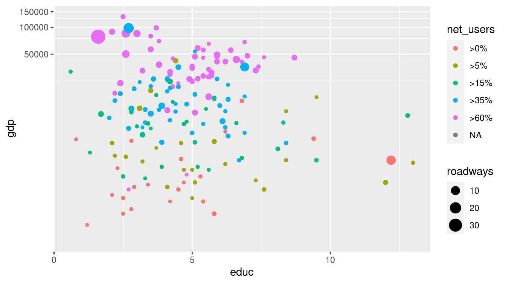
Figure 3.5: Scatterplot using a logarithmic transformation of GDP that helps to mitigate visual clustering caused by the right-skewed distribution of GDP among countries.
Scales can also be manipulated in ggplot2 using any of the scale functions.
For example, instead of using the coord_trans() function as we did above, we could have achieved a similar plot through the use of the scale_y_continuous() function, as illustrated in Figure 3.6.
In either case, the points will be drawn in the same location—the difference in the two plots is how and where the major tick marks and axis labels are drawn. We prefer to use coord_trans() in Figure 3.5 because it draws attention to the use of the log scale (compare with Figure 3.6).
Similarly-named functions (e.g., scale_x_continuous(), scale_x_discrete(), scale_color(), etc.) perform analogous operations on different aesthetics.
g +
geom_point(aes(color = net_users, size = roadways)) +
scale_y_continuous(
name = "Gross Domestic Product",
trans = "log10",
labels = scales::comma
)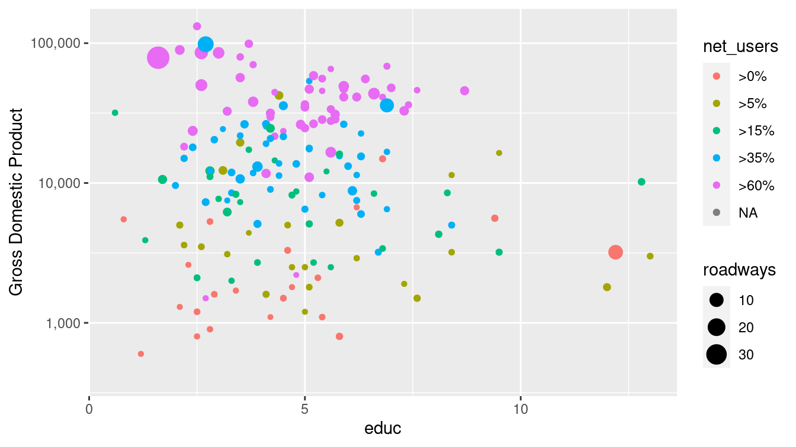
Figure 3.6: Scatterplot using a logarithmic transformation of GDP. The use of a log scale on the \(y\)-axis is less obvious than it is in Figure 3.5 due to the uniformly-spaced horizontal grid lines.
Not all scales are about position.
For instance, in Figure 3.4, net_users is translated to color.
Similarly, roadways is translated to size: the largest dot corresponds to a value of 30 roadways per unit area.
3.1.3 Guides
Context is provided by guides (more commonly called legends). A guide helps a human reader understand the meaning of the visual cues by providing context.
For position visual cues, the most common sort of guide is the familiar axis with its tick marks and labels. But other guides exist. In Figures 3.4 and 3.5, legends relate how dot color corresponds to internet connectivity, and how dot size corresponds to length of roadways (note the use of a log scale). The geom_text() and geom_label() functions can also be used to provide specific textual annotations on the plot. Examples of how to use these functions for annotations are provide in Section 3.3.
3.1.4 Facets
Using multiple aesthetics such as shape, color, and size to display multiple variables can produce a confusing, hard-to-read graph.
Facets—multiple side-by-side graphs used to display levels of a categorical variable—provide a simple and effective alternative.
Figure 3.7 uses facets to show different levels of Internet connectivity, providing a better view than Figure 3.4.
There are two functions that create facets: facet_wrap() and facet_grid().
The former creates a facet for each level of a single categorical variable, whereas the latter creates a facet for each combination of two categorical variables, arranging them in a grid.
g +
geom_point(alpha = 0.9, aes(size = roadways)) +
coord_trans(y = "log10") +
facet_wrap(~net_users, nrow = 1) +
theme(legend.position = "top")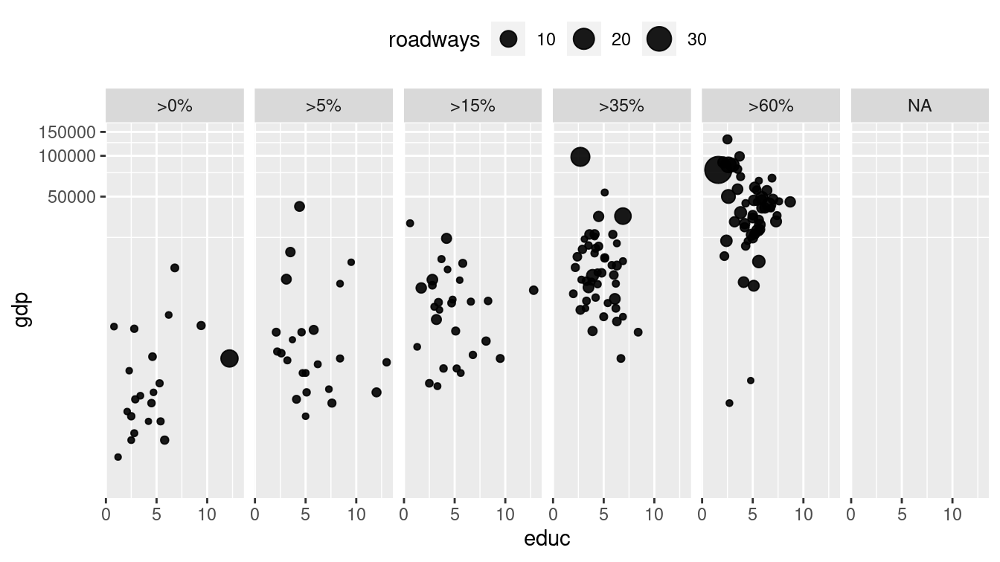
Figure 3.7: Scatterplot using facets for different ranges of Internet connectivity.
3.1.5 Layers
On occasion, data from more than one data table are graphed together.
For example, the MedicareCharges and MedicareProviders data tables provide information about the average cost of each medical procedure in each state.
If you live in New Jersey, you might wonder how providers in your state charge for different medical procedures.
However, you will certainly want to understand those averages in the context of the averages across all states. In the MedicareCharges table, each row represents a different medical procedure (drg) with its associated average cost in each state.
We also create a second data table called ChargesNJ, which contains only those rows corresponding to providers in the state of New Jersey. Do not worry if these commands aren’t familiar—we will learn these in Chapter 4.
ChargesNJ <- MedicareCharges %>%
filter(stateProvider == "NJ")The first few rows from the data table for New Jersey are shown in Table 3.2. This glyph-ready table (see Chapter 6) can be translated to a chart (Figure 3.8) using bars to represent the average charges for different medical procedures in New Jersey. The geom_col() function creates a separate bar for each of the 100 different medical procedures.
| drg | stateProvider | num_charges | mean_charge |
|---|---|---|---|
| 039 | NJ | 31 | 35104 |
| 057 | NJ | 55 | 45692 |
| 064 | NJ | 55 | 87042 |
| 065 | NJ | 59 | 59576 |
| 066 | NJ | 56 | 45819 |
| 069 | NJ | 61 | 41917 |
| 074 | NJ | 41 | 42993 |
| 101 | NJ | 58 | 42314 |
| 149 | NJ | 50 | 34916 |
| 176 | NJ | 36 | 58941 |
p <- ggplot(
data = ChargesNJ,
aes(x = reorder(drg, mean_charge), y = mean_charge)
) +
geom_col(fill = "gray") +
ylab("Statewide Average Charges ($)") +
xlab("Medical Procedure (DRG)") +
theme(axis.text.x = element_text(angle = 90, hjust = 1, size = rel(0.5)))
p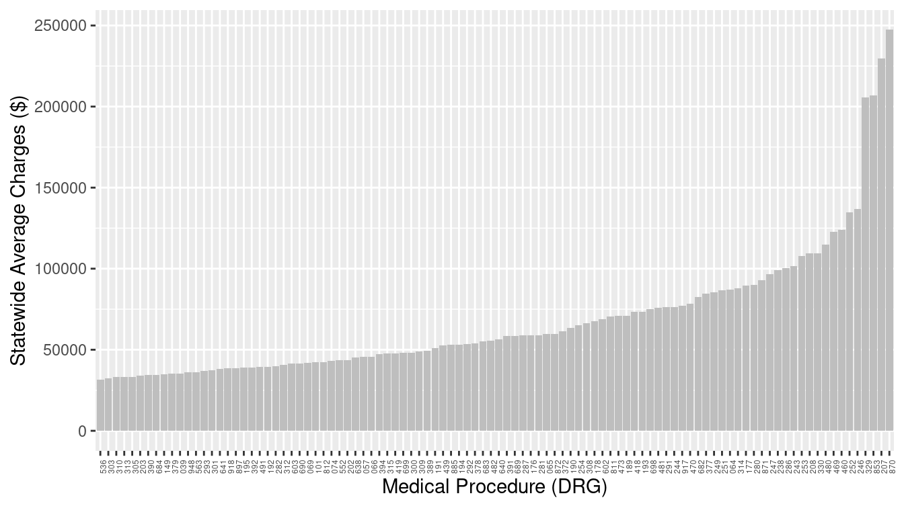
Figure 3.8: Bar graph of average charges for medical procedures in New Jersey.
How do the charges in New Jersey compare to those in other states? The two data tables, one for New Jersey and one for the whole country, can be plotted with different glyph types: bars for New Jersey and dots for the states across the whole country as in Figure 3.9.
p + geom_point(data = MedicareCharges, size = 1, alpha = 0.3) 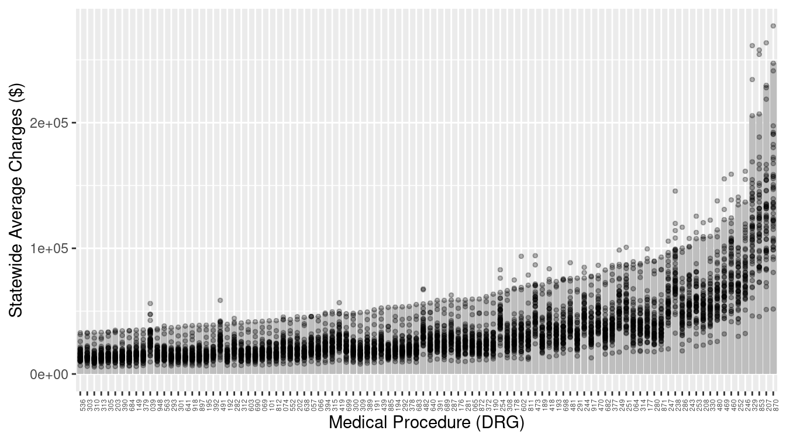
Figure 3.9: Bar graph adding a second layer to provide a comparison of New Jersey to other states. Each dot represents one state, while the bars represent New Jersey.
With the context provided by the individual states, it is easy to see that the charges in New Jersey are among the highest in the country for each medical procedure.
3.2 Canonical data graphics in R
Over time, statisticians have developed standard data graphics for specific use cases (Tukey 1990). While these data graphics are not always mesmerizing, they are hard to beat for simple effectiveness. Every data scientist should know how to make and interpret these canonical data graphics—they are ignored at your peril.
3.2.1 Univariate displays
It is generally useful to understand how a single variable is distributed. If that variable is numeric, then its distribution is commonly summarized graphically using a histogram or density plot. Using the ggplot2 package, we can display either plot for the math variable in the SAT_2010 data frame by binding the math variable to the x aesthetic.
g <- ggplot(data = SAT_2010, aes(x = math))
Then we only need to choose either geom_histogram() or geom_density(). Both Figures 3.10 and 3.11 convey the same information, but whereas the histogram uses pre-defined bins to create a discrete distribution, a density plot uses a kernel smoother to make a continuous curve.
g + geom_histogram(binwidth = 10) + labs(x = "Average math SAT score")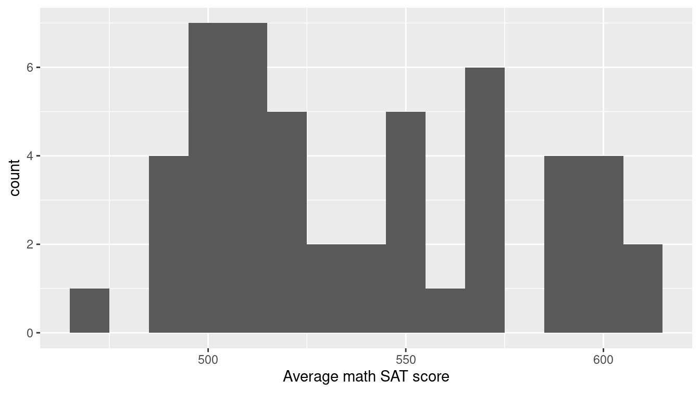
Figure 3.10: Histogram showing the distribution of math SAT scores by state.
Note that the binwidth argument is being used to specify the width of bins in the histogram.
Here, each bin contains a 10-point range of SAT scores.
In general, the appearance of a histogram can vary considerably based on the choice of bins, and there is no one “best” choice (Lunzer and McNamara 2017).
You will have to decide what bin width is most appropriate for your data.
g + geom_density(adjust = 0.3)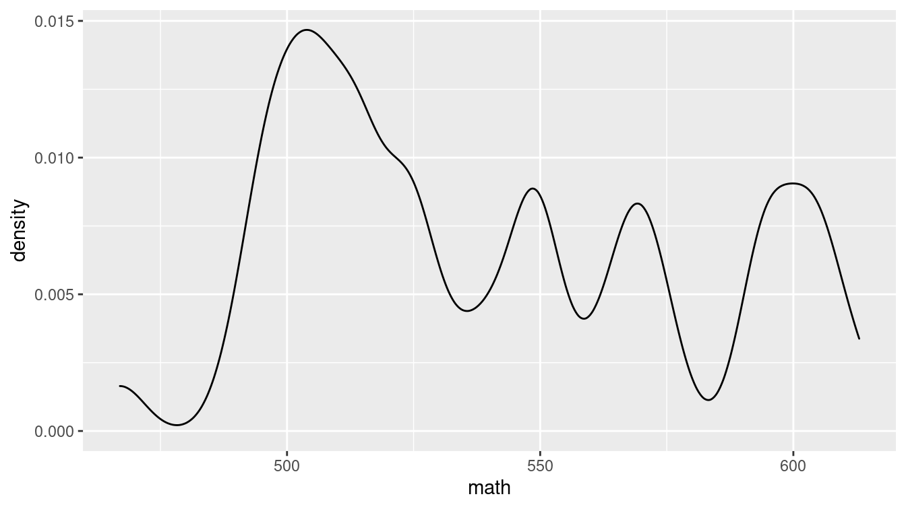
Figure 3.11: Density plot showing the distribution of average math SAT scores by state.
Similarly, in the density plot shown in Figure 3.11 we use the adjust argument to modify the bandwidth being used by the kernel smoother. In the taxonomy defined above, a density plot uses position and direction in a Cartesian plane with a horizontal scale defined by the units in the data.
If your variable is categorical, it doesn’t make sense to think about the values as having a continuous density. Instead, we can use a bar graph to display the distribution of a categorical variable.
To make a simple bar graph for math, identifying each bar by the label state, we use the geom_col() command, as displayed in Figure 3.12. Note that we add a few wrinkles to this plot. First, we use the head() function to display only the first 10 states (in alphabetical order). Second, we use the reorder() function to sort the state names in order of their average math SAT score.
ggplot(
data = head(SAT_2010, 10),
aes(x = reorder(state, math), y = math)
) +
geom_col() +
labs(x = "State", y = "Average math SAT score")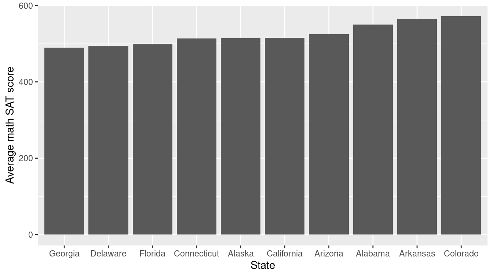
Figure 3.12: A bar plot showing the distribution of average math SAT scores for a selection of states.
As noted earlier, we recommend against the use of pie charts to display the distribution of a categorical variable since, in most cases, a table of frequencies is more informative. An informative graphical display can be achieved using a stacked bar plot, such as the one shown in Figure 3.13 using the geom_bar() function. Note that we have used the coord_flip() function to display the bars horizontally instead of vertically.
ggplot(data = mosaicData::HELPrct, aes(x = homeless)) +
geom_bar(aes(fill = substance), position = "fill") +
scale_fill_brewer(palette = "Spectral") +
coord_flip()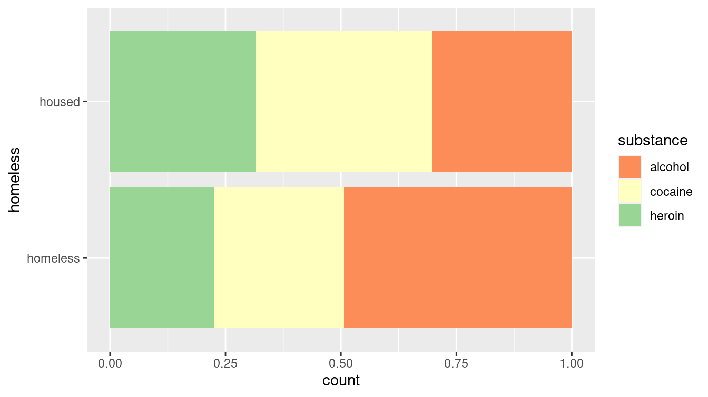
Figure 3.13: A stacked bar plot showing the distribution of substance of abuse for participants in the HELP study. Compare this to Figure 2.14.
This method of graphical display enables a more direct comparison of proportions than would be possible using two pie charts. In this case, it is clear that homeless participants were more likely to identify as being involved with alcohol as their primary substance of abuse. However, like pie charts, bar charts are sometimes criticized for having a low data-to-ink ratio. That is, they use a comparatively large amount of ink to depict relatively few data points.
3.2.2 Multivariate displays
Multivariate displays are the most effective way to convey the relationship between more than one variable. The venerable scatterplot remains an excellent way to display observations of two quantitative (or numerical) variables. The scatterplot is provided in ggplot2 by the geom_point() command. The main purpose of a scatterplot is to show the relationship between two variables across many cases. Most often, there is a Cartesian coordinate system in which the \(x\)-axis represents one variable and the \(y\)-axis the value of a second variable.
g <- ggplot(
data = SAT_2010,
aes(x = expenditure, y = math)
) +
geom_point()We will also add a smooth trend line and some more specific axis labels. We use the geom_smooth() function in order to plot the simple linear regression line (method = "lm") through the points (see Section 9.6 and Appendix E).
g <- g +
geom_smooth(method = "lm", se = FALSE) +
xlab("Average expenditure per student ($1000)") +
ylab("Average score on math SAT")
In Figures 3.14 and 3.15, we plot the relationship between the average SAT math score and the expenditure per pupil (in thousands of United States dollars) among states in 2010.
A third (categorical) variable can be added through faceting and/or layering.
In this case, we use the mutate() function (see Chapter 4) to create a new variable called SAT_rate that places states into bins (e.g., high, medium, low) based on the percentage of students taking the SAT.
Additionally, in order to include that new variable in our plots, we use the %+% operator to update the data frame that is bound to our plot.
SAT_2010 <- SAT_2010 %>%
mutate(
SAT_rate = cut(
sat_pct,
breaks = c(0, 30, 60, 100),
labels = c("low", "medium", "high")
)
)
g <- g %+% SAT_2010In Figure 3.14, we use the color aesthetic to separate the data by SAT_rate on a single plot (i.e., layering).
Compare this with Figure 3.15, where we add a facet_wrap() mapped to SAT_rate to separate by facet.
g + aes(color = SAT_rate)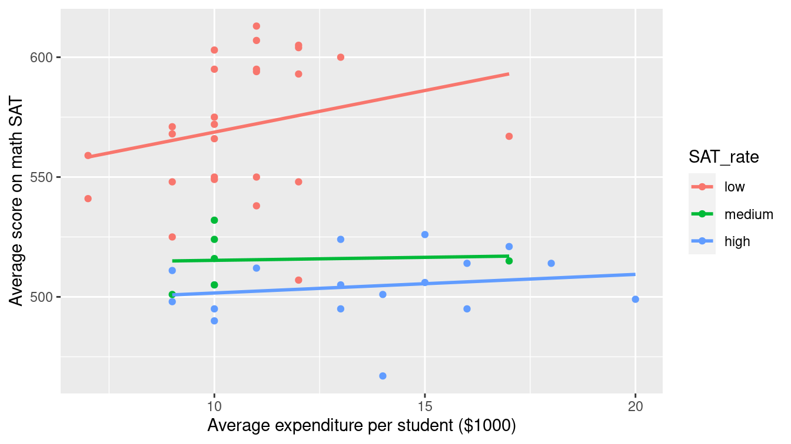
Figure 3.14: Scatterplot using the color aesthetic to separate the relationship between two numeric variables by a third categorical variable.
g + facet_wrap(~ SAT_rate)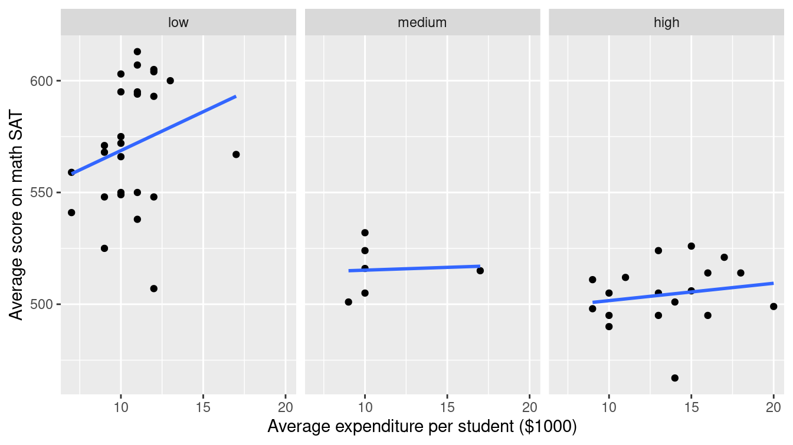
Figure 3.15: Scatterplot using a facet_wrap() to separate the relationship between two numeric variables by a third categorical variable.
The NHANES data table provides medical, behavioral, and morphometric measurements of individuals. The scatterplot in Figure 3.16 shows the relationship between two of the variables, height and age. Each dot represents one person and the position of that dot signifies the value of the two variables for that person. Scatterplots are useful for visualizing a simple relationship between two variables. For instance, you can see in Figure 3.16 the familiar pattern of growth in height from birth to the late teens.
It’s helpful to do a bit more wrangling (more on this later) to ensure that the spatial relationship of the lines (adult men tend to be taller than adult women) matches the ordering of the legend labels. Here we use the fct_relevel() function (from the forcats package) to reset the factor levels.
library(NHANES)
ggplot(
data = slice_sample(NHANES, n = 1000),
aes(x = Age, y = Height, color = fct_relevel(Gender, "male"))
) +
geom_point() +
geom_smooth() +
xlab("Age (years)") +
ylab("Height (cm)") +
labs(color = "Gender")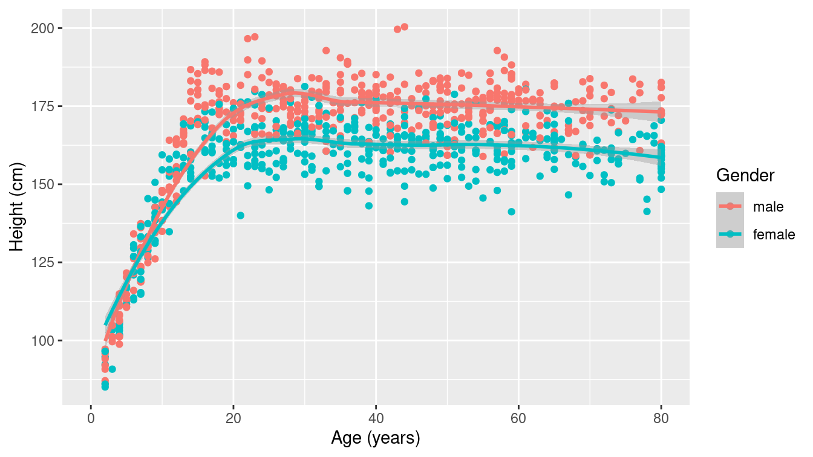
Figure 3.16: A scatterplot for 1,000 random individuals from the NHANES study. Note how mapping gender to color illuminates the differences in height between men and women.
Some scatterplots have special meanings. A time series—such as the one shown in Figure 3.17—is just a scatterplot with time on the horizontal axis and points connected by lines to indicate temporal continuity. In Figure 3.17, the temperature at a weather station in western Massachusetts is plotted over the course of the year. The familiar fluctuations based on the seasons are evident. Be especially aware of dubious causality in these plots: Is time really a good explanatory variable?
library(macleish)
ggplot(data = whately_2015, aes(x = when, y = temperature)) +
geom_line(color = "darkgray") +
geom_smooth() +
xlab(NULL) +
ylab("Temperature (degrees Celsius)")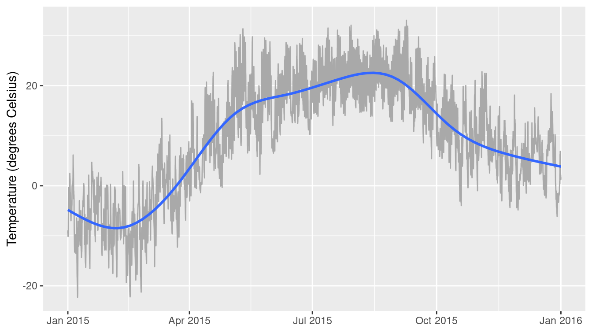
Figure 3.17: A time series showing the change in temperature at the MacLeish field station in 2015.
For displaying a numerical response variable against a categorical explanatory variable, a common choice is a box-and-whisker (or box) plot, as shown in Figure 3.18.
(More details about the data wrangling needed to create the categorical month variable will be provided in later chapters.)
It may be easiest to think about this as simply a graphical depiction of the five-number summary (minimum [0th percentile], Q1 [25th percentile], median [50th percentile], Q3 [75th percentile], and maximum [100th percentile]).
whately_2015 %>%
mutate(month = as.factor(lubridate::month(when, label = TRUE))) %>%
group_by(month) %>%
skim(temperature) %>%
select(-na)
── Variable type: numeric ──────────────────────────────────────────────────
var month n mean sd p0 p25 p50 p75 p100
<chr> <ord> <int> <dbl> <dbl> <dbl> <dbl> <dbl> <dbl> <dbl>
1 temperature Jan 4464 -6.37 5.14 -22.3 -10.3 -6.25 -2.35 6.16
2 temperature Feb 4032 -9.26 5.11 -22.2 -12.3 -9.43 -5.50 4.27
3 temperature Mar 4464 -0.873 5.06 -16.2 -4.61 -0.550 2.99 13.5
4 temperature Apr 4320 8.04 5.51 -3.04 3.77 7.61 11.8 22.7
5 temperature May 4464 17.4 5.94 2.29 12.8 17.5 21.4 31.4
6 temperature Jun 4320 17.7 5.11 6.53 14.2 18.0 21.2 29.4
7 temperature Jul 4464 21.6 3.90 12.0 18.6 21.2 24.3 32.1
8 temperature Aug 4464 21.4 3.79 12.9 18.4 21.1 24.3 31.2
9 temperature Sep 4320 19.3 5.07 5.43 15.8 19 22.5 33.1
10 temperature Oct 4464 9.79 5.00 -3.97 6.58 9.49 13.3 22.3
11 temperature Nov 4320 7.28 5.65 -4.84 3.14 7.11 10.8 22.8
12 temperature Dec 4464 4.95 4.59 -6.16 1.61 5.15 8.38 18.4
ggplot(
data = whately_2015,
aes(
x = lubridate::month(when, label = TRUE),
y = temperature
)
) +
geom_boxplot() +
xlab("Month") +
ylab("Temperature (degrees Celsius)")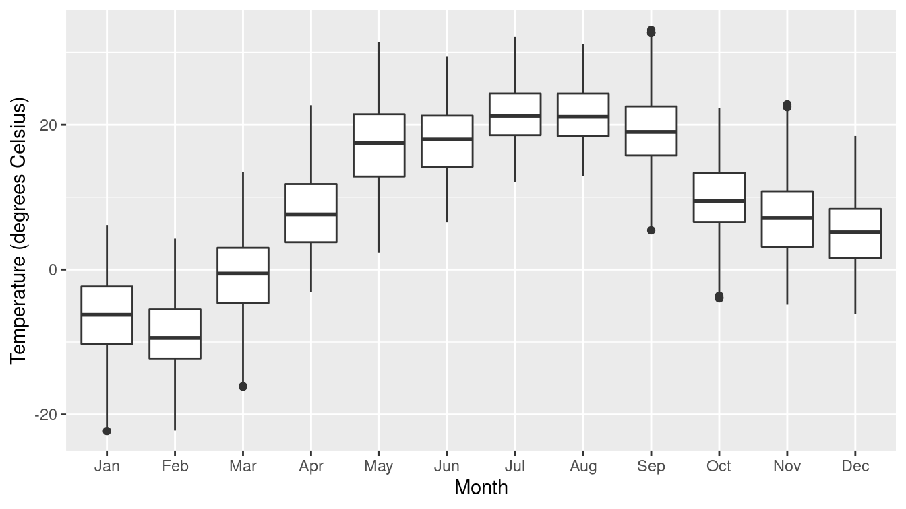
Figure 3.18: A box-and-whisker of temperatures by month at the MacLeish field station.
When both the explanatory and response variables are categorical (or binned), points and lines don’t work as well. How likely is a person to have diabetes, based on their age and BMI (body mass index)? In the mosaic plot (or eikosogram) shown in Figure 3.19 the number of observations in each cell is proportional to the area of the box. Thus, you can see that diabetes tends to be more common for older people as well as for those who are obese, since the blue-shaded regions are larger than expected under an independence model while the pink are less than expected. These provide a more accurate depiction of the intuitive notions of probability familiar from Venn diagrams (Olford and Cherry 2003).
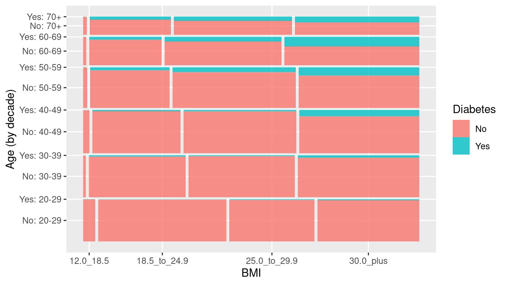
Figure 3.19: Mosaic plot (eikosogram) of diabetes by age and weight status (BMI).
In Table 3.3 we summarize the use of ggplot2 plotting commands and their relationship to canonical data graphics. Note that the geom_mosaic() function is not part of ggplot2 but rather is available through the ggmosaic package.
| response (\(y\)) | explanatory (\(x\)) | plot type | geom_*() |
|---|---|---|---|
| numeric | histogram, density |
geom_histogram(), geom_density()
|
|
| categorical | stacked bar |
geom_bar()
|
|
| numeric | numeric | scatter |
geom_point()
|
| numeric | categorical | box |
geom_boxplot()
|
| categorical | categorical | mosaic |
geom_mosaic()
|
3.2.3 Maps
Using a map to display data geographically helps both to identify particular cases and to show spatial patterns and discrepancies. In Figure 3.20, the shading of each country represents its oil production. This sort of map, where the fill color of each region reflects the value of a variable, is sometimes called a choropleth map. We will learn more about mapping and how to work with spatial data in Chapter 17.
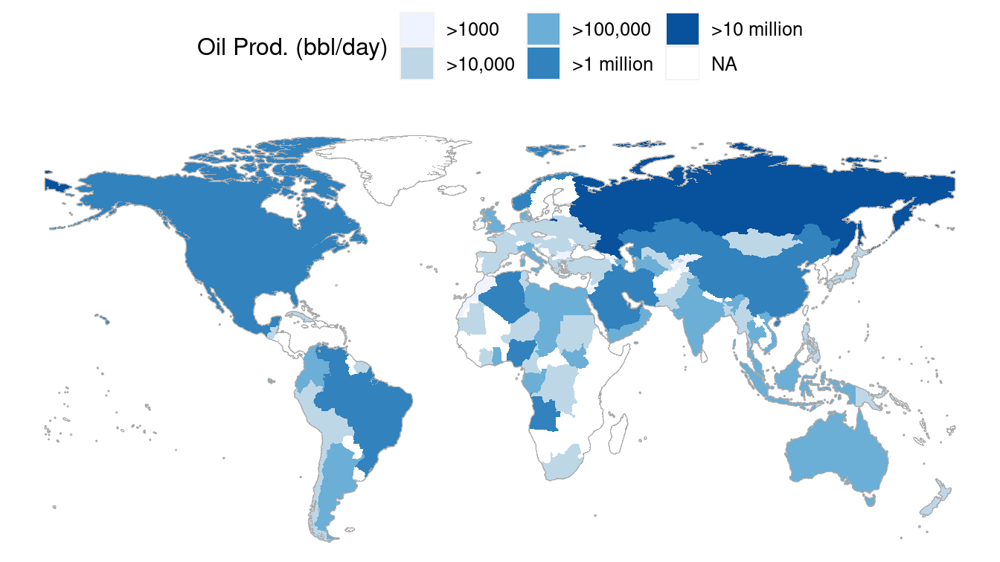
Figure 3.20: A choropleth map displaying oil production by countries around the world in barrels per day.
3.2.4 Networks
A network is a set of connections, called edges, between nodes, called vertices. A vertex represents an entity. The edges indicate pairwise relationships between those entities.
The NCI60 data set is about the genetics of cancer.
The data set contains more than 40,000 probes for the expression of genes, in each of 60 cancers.
In the network displayed in Figure 3.21, a vertex is a given cell line, and each is depicted as a dot.
The dot’s color and label gives the type of cancer involved.
These are ovarian, colon, central nervous system, melanoma, renal, breast, and lung cancers.
The edges between vertices show pairs of cell lines that had a strong correlation in gene expression.
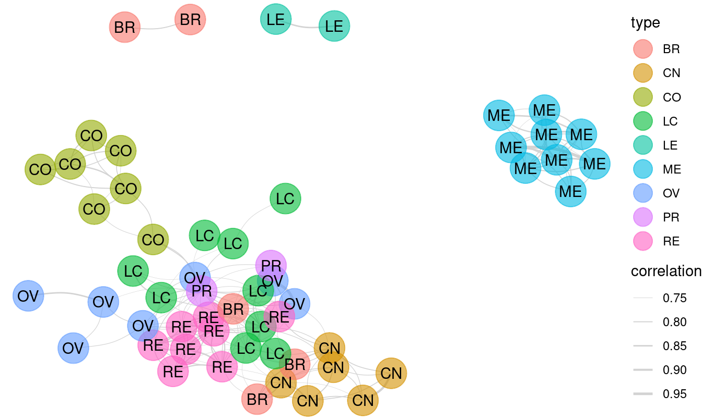
Figure 3.21: A network diagram displaying the relationship between types of cancer cell lines.
The network shows that the melanoma cell lines (ME) are closely related to each other but not so much to other cell lines. The same is true for colon cancer cell lines (CO) and for central nervous system (CN) cell lines. Lung cancers, on the other hand, tend to have associations with multiple other types of cancers. We will explore the topic of network science in greater depth in Chapter 20.
3.3 Extended example: Historical baby names
For many of us, there are few things that are more personal than our name. It is impossible to remember a time when you didn’t have your name, and you carry it with you wherever you go. You instinctively react when you hear it. And yet, you didn’t choose your name—your parents did (unless you’ve changed your name).
How do parents go about choosing names? Clearly, there seem to be both short- and long-term trends in baby names. The popularity of the name “Bella” spiked after the lead character in Twilight became a cultural phenomenon. Other once-popular names seem to have fallen out of favor—writers at FiveThirtyEight asked, “where have all the Elmer’s gone?”
Using data from the babynames package, which uses public data from the Social Security Administration (SSA), we can recreate many of the plots presented in the FiveThirtyEight article, and in the process learn how to use ggplot2 to make production-quality data graphics.
In the link in the footnote3, FiveThirtyEight presents an informative, annotated data graphic that shows the relative ages of American males named “Joseph.” Drawing on what you have learned in Chapter 2, take a minute to jot down the visual cues, coordinate system, scales, and context present in this plot. This analysis will facilitate our use of ggplot2 to re-construct it. (Look ahead to Figure 3.22 to see our recreation.)
{kind=link}
The key insight of the FiveThirtyEight work is the estimation of the number of people with each name who are currently alive. The lifetables table from the babynames package contains
actuarial estimates of the number of people per 100,000 who are alive at age \(x\), for every \(0 \leq x \leq 114\). The make_babynames_dist() function in the mdsr package adds some more convenient variables and filters for only the data that is relevant to people alive in 2014.4
library(babynames)
BabynamesDist <- make_babynames_dist()
BabynamesDist# A tibble: 1,639,722 × 9
year sex name n prop alive_prob count_thousands age_today
<dbl> <chr> <chr> <int> <dbl> <dbl> <dbl> <dbl>
1 1900 F Mary 16706 0.0526 0 16.7 114
2 1900 F Helen 6343 0.0200 0 6.34 114
3 1900 F Anna 6114 0.0192 0 6.11 114
4 1900 F Margaret 5304 0.0167 0 5.30 114
5 1900 F Ruth 4765 0.0150 0 4.76 114
6 1900 F Elizabeth 4096 0.0129 0 4.10 114
7 1900 F Florence 3920 0.0123 0 3.92 114
8 1900 F Ethel 3896 0.0123 0 3.90 114
9 1900 F Marie 3856 0.0121 0 3.86 114
10 1900 F Lillian 3414 0.0107 0 3.41 114
# … with 1,639,712 more rows, and 1 more variable: est_alive_today <dbl>To find information about a specific name, we use the filter() function.
BabynamesDist %>%
filter(name == "Benjamin")3.3.1 Percentage of people alive today
How did you break down Figure 3.22? There are two main data elements in that plot: a thick black line indicating the number of Josephs born each year, and the thin light blue bars indicating the number of Josephs born in each year that are expected to still be alive today. In both cases, the vertical axis corresponds to the number of people (in thousands), and the horizontal axis corresponds to the year of birth.
We can compose a similar plot in ggplot2. First we take the relevant subset of the data and set up the initial ggplot2 object. The data frame joseph is bound to the plot, since this contains all of the data that we need for this plot, but we will be using it with multiple geoms. Moreover, the year variable is mapped to the \(x\)-axis as an aesthetic. This will ensure that everything will line up properly.
joseph <- BabynamesDist %>%
filter(name == "Joseph" & sex == "M")
name_plot <- ggplot(data = joseph, aes(x = year))Next, we will add the bars.
name_plot <- name_plot +
geom_col(
aes(y = count_thousands * alive_prob),
fill = "#b2d7e9",
color = "white",
size = 0.1
)The geom_col() function adds bars, which are filled with a light blue color and a white border. The height of the bars is an aesthetic that is mapped to the estimated number of people alive today who were born in each year.
The black line is easily added using the geom_line() function.
name_plot <- name_plot +
geom_line(aes(y = count_thousands), size = 2)Adding an informative label for the vertical axis and removing an uninformative label for the horizontal axis will improve the readability of our plot.
name_plot <- name_plot +
ylab("Number of People (thousands)") +
xlab(NULL)Inspecting the summary() of our plot at this point can help us keep things straight—take note of the mappings. Do they accord with what you jotted down previously?
summary(name_plot)data: year, sex, name, n, prop, alive_prob, count_thousands,
age_today, est_alive_today [111x9]
mapping: x = ~year
faceting: <ggproto object: Class FacetNull, Facet, gg>
compute_layout: function
draw_back: function
draw_front: function
draw_labels: function
draw_panels: function
finish_data: function
init_scales: function
map_data: function
params: list
setup_data: function
setup_params: function
shrink: TRUE
train_scales: function
vars: function
super: <ggproto object: Class FacetNull, Facet, gg>
-----------------------------------
mapping: y = ~count_thousands * alive_prob
geom_col: width = NULL, na.rm = FALSE
stat_identity: na.rm = FALSE
position_stack
mapping: y = ~count_thousands
geom_line: na.rm = FALSE, orientation = NA
stat_identity: na.rm = FALSE
position_identity The final data-driven element of the FiveThirtyEight graphic is a darker blue bar indicating the median year of birth. We can compute this with the wtd.quantile() function in the Hmisc package. Setting the probs argument to 0.5 will give us the median year of birth, weighted by the number of people estimated to be alive today (est_alive_today). The pull() function simply extracts the year variable from the data frame returned by summarize().
wtd_quantile <- Hmisc::wtd.quantile
median_yob <- joseph %>%
summarize(
year = wtd_quantile(year, est_alive_today, probs = 0.5)
) %>%
pull(year)
median_yob 50%
1975 We can then overplot a single bar in a darker shade of blue. Here, we are using the ifelse() function cleverly. If the year is equal to the median year of birth, then the height of the bar is the estimated number of Josephs alive today. Otherwise, the height of the bar is zero (so you can’t see it at all). In this manner, we plot only the one darker blue bar that we want to highlight.
name_plot <- name_plot +
geom_col(
color = "white", fill = "#008fd5",
aes(y = ifelse(year == median_yob, est_alive_today / 1000, 0))
)
Lastly, the FiveThirtyEight graphic contains many contextual elements specific to the name Joseph. We can add a title, annotated text, and an arrow providing focus to a specific element of the plot. Figure 3.22 displays our reproduction.
There are a few differences in the presentation of fonts, title, etc. These can be altered using ggplot2’s theming framework, but we won’t explore these subtleties here (see Section 14.5).5
Here we create a tribble() (a row-wise simple data frame) to add annotations.
context <- tribble(
~year, ~num_people, ~label,
1935, 40, "Number of Josephs\nborn each year",
1915, 13, "Number of Josephs\nborn each year
\nestimated to be alive\non 1/1/2014",
2003, 40, "The median\nliving Joseph\nis 37 years old",
)
name_plot +
ggtitle("Age Distribution of American Boys Named Joseph") +
geom_text(
data = context,
aes(y = num_people, label = label, color = label)
) +
geom_curve(
x = 1990, xend = 1974, y = 40, yend = 24,
arrow = arrow(length = unit(0.3, "cm")), curvature = 0.5
) +
scale_color_manual(
guide = FALSE,
values = c("black", "#b2d7e9", "darkgray")
) +
ylim(0, 42)Warning: It is deprecated to specify `guide = FALSE` to remove a guide.
Please use `guide = "none"` instead.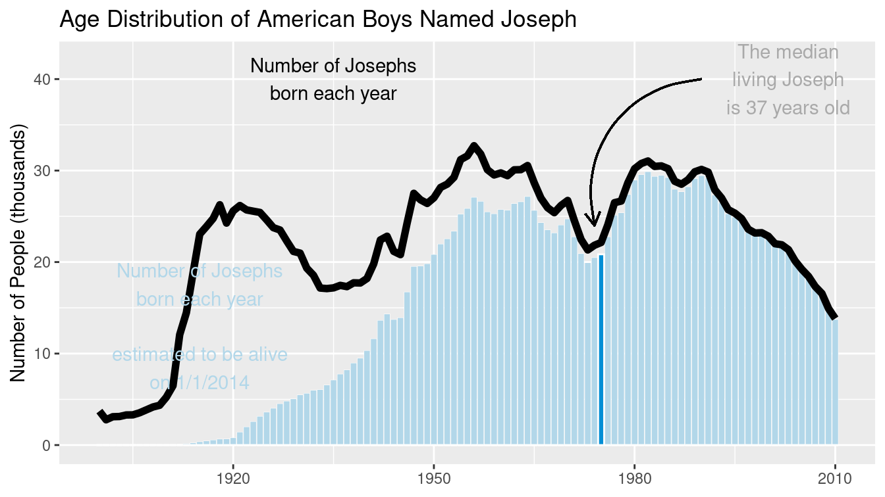
Figure 3.22: Recreation of the age distribution of “Joseph” plot.
Notice that we did not update the name_plot object with this contextual information. This was intentional, since we can update the data argument of name_plot and obtain an analogous plot for another name. This functionality makes use of the special %+% operator. As shown in Figure 3.23, the name “Josephine” enjoyed a spike in popularity around 1920 that later subsided.
name_plot %+% filter(
BabynamesDist,
name == "Josephine" & sex == "F"
)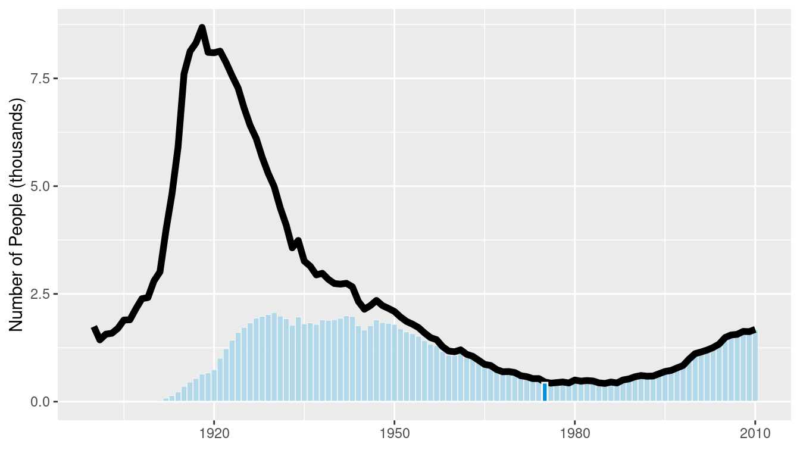
Figure 3.23: Age distribution of American girls named “Josephine.”
While some names are almost always associated with a particular gender, many are not. More interestingly, the proportion of people assigned male or female with a given name often varies over time. These data were presented nicely by Nathan Yau at FlowingData.
We can compare how our name_plot differs by gender for a given name using a facet. To do this, we will simply add a call to the facet_wrap() function, which will create small multiples based on a single categorical variable, and then feed a new data frame to the plot that contains data for both sexes assigned at birth. In Figure 3.24, we show the prevalence of “Jessie” changed for the two sexes.
names_plot <- name_plot +
facet_wrap(~sex)
names_plot %+% filter(BabynamesDist, name == "Jessie")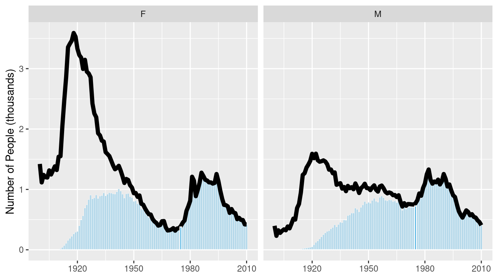
Figure 3.24: Comparison of the name “Jessie” across two genders.
The plot at FlowingData shows the 35 most common “unisex” names—that is, the names that have historically had the greatest balance between those assigned male and female at birth. We can use a facet_grid() to compare the gender breakdown for a few of the most common of these, as shown in Figures 3.25 and 3.26.
many_names_plot <- name_plot +
facet_grid(name ~ sex)
mnp <- many_names_plot %+% filter(
BabynamesDist,
name %in% c("Jessie", "Marion", "Jackie")
)
mnp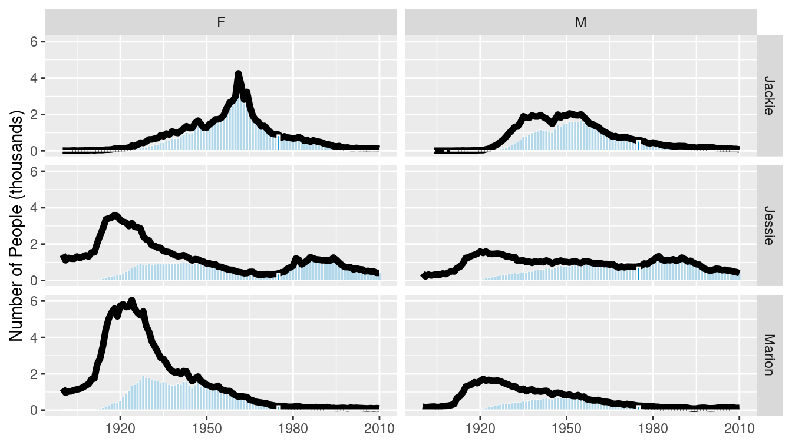
Figure 3.25: Gender breakdown for the three most unisex names.
Reversing the order of the variables in the call to facet_grid() flips the orientation of the facets.
mnp + facet_grid(sex ~ name)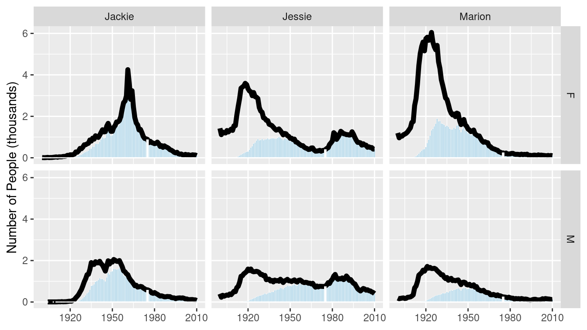
Figure 3.26: Gender breakdown for the three most unisex names, oriented vertically.
3.3.2 Most common names for women
A second interesting data graphic from the same FiveThirtyEight article is recreated in Figure 3.27. Take a moment to jump ahead and analyze this data graphic. What are visual cues? What are the variables? How are the variables being mapped to the visual cues? What geoms are present?
To recreate this data graphic, we need to collect the right data. We begin by figuring out what the 25 most common female names are among those estimated to be alive today. We can do this by counting the estimated number of people alive today for each name, filtering for women, sorting by the number estimated to be alive, and then taking the top 25 results. We also need to know the median age, as well as the first and third quartiles for age among people having each name.
com_fem <- BabynamesDist %>%
filter(n > 100, sex == "F") %>%
group_by(name) %>%
mutate(wgt = est_alive_today / sum(est_alive_today)) %>%
summarize(
N = n(),
est_num_alive = sum(est_alive_today),
quantiles = list(
wtd_quantile(
age_today, est_alive_today, probs = 1:3/4, na.rm = TRUE
)
)
) %>%
mutate(measures = list(c("q1_age", "median_age", "q3_age"))) %>%
unnest(cols = c(quantiles, measures)) %>%
pivot_wider(names_from = measures, values_from = quantiles) %>%
arrange(desc(est_num_alive)) %>%
head(25)This data graphic is a bit trickier than the previous one. We’ll start by binding the data, and defining the \(x\) and \(y\) aesthetics.
We put the names on the \(x\)-axis and the median_age on the \(y\)—the reasons for doing so will be made clearer later.
We will also define the title of the plot, and remove the \(x\)-axis label, since it is self-evident.
w_plot <- ggplot(
data = com_fem,
aes(x = reorder(name, -median_age), y = median_age)
) +
xlab(NULL) +
ylab("Age (in years)") +
ggtitle("Median ages for females with the 25 most common names")The next elements to add are the gold rectangles. To do this, we use the geom_linerange() function.
It may help to think of these not as rectangles, but as really thick lines.
Because we have already mapped the names to the \(x\)-axis, we only need to specify the mappings for ymin and ymax.
These are mapped to the first and third quartiles, respectively.
We will also make these lines very thick and color them appropriately.
The geom_linerange() function only understands ymin and ymax—there is not a corresponding function with xmin and xmax.
However, we will fix this later by transposing the figure.
We have also added a slight alpha transparency to allow the gridlines to be visible underneath the gold rectangles.
w_plot <- w_plot +
geom_linerange(
aes(ymin = q1_age, ymax = q3_age),
color = "#f3d478",
size = 4.5,
alpha = 0.8
)
There is a red dot indicating the median age for each of these names. If you look carefully, you can see a white border around each red dot. The default glyph for geom_point() is a solid dot, which is shape 19. By changing it to shape 21, we can use both the fill and color arguments.
w_plot <- w_plot +
geom_point(
fill = "#ed3324",
color = "white",
size = 2,
shape = 21
)It remains only to add the context and flip our plot around so the orientation matches the original figure.
The coord_flip() function does exactly that.
context <- tribble(
~median_age, ~x, ~label,
65, 24, "median",
29, 16, "25th",
48, 16, "75th percentile",
)
age_breaks <- 1:7 * 10 + 5
w_plot +
geom_point(
aes(y = 60, x = 24),
fill = "#ed3324",
color = "white",
size = 2,
shape = 21
) +
geom_text(data = context, aes(x = x, label = label)) +
geom_point(aes(y = 24, x = 16), shape = 17) +
geom_point(aes(y = 56, x = 16), shape = 17) +
geom_hline(
data = tibble(x = age_breaks),
aes(yintercept = x),
linetype = 3
) +
scale_y_continuous(breaks = age_breaks) +
coord_flip()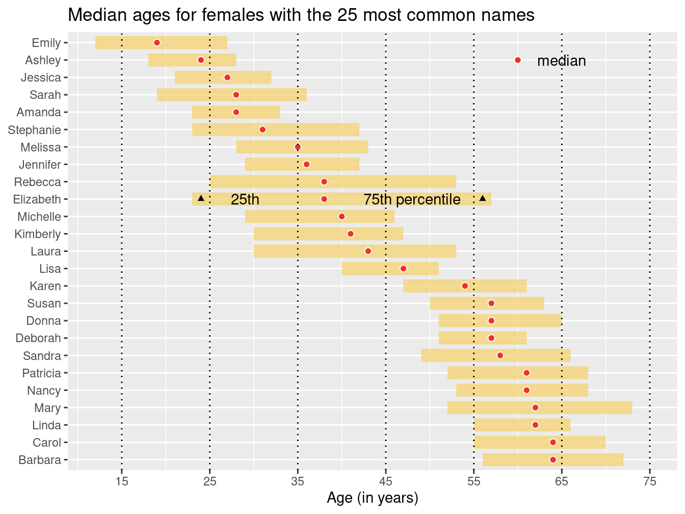
Figure 3.27: Recreation of FiveThirtyEight’s plot of the age distributions for the 25 most common women’s names.
You will note that the name “Anna” was fifth most common in the original FiveThirtyEight article but did not appear in Figure 3.27. This appears to be a result of that name’s extraordinarily large range and the pro-rating that FiveThirtyEight did to their data. The “older” names—including Anna—were more affected by this alteration. Anna was the 47th most popular name by our calculations.
3.4 Further resources
The grammar of graphics was created by Wilkinson et al. (2005), and implemented in ggplot2 by Hadley Wickham (2016), now in a second edition. The ggplot2 cheat sheet produced by RStudio is an excellent reference for understanding the various features of ggplot2.
3.5 Exercises
Problem 1 (Easy): Angelica Schuyler Church (1756–1814) was the daughter of New York Governer Philip Schuyler and sister of
Elizabeth Schuyler Hamilton. Angelica, New York was named after her. Using the babynames package generate a plot of the reported proportion of babies born with the name Angelica over time and interpret the figure.
Problem 2 (Easy): Using data from the nasaweather package, create a scatterplot between wind and pressure, with color being used to distinguish the type of storm.
Problem 3 (Medium): The following questions use the Marriage data set from the mosaicData package.
library(mosaicData)- Create an informative and meaningful data graphic.
- Identify each of the visual cues that you are using, and describe how they are related to each variable.
- Create a data graphic with at least five variables (either quantitative or categorical). For the purposes of this exercise, do not worry about making your visualization meaningful—just try to encode five variables into one plot.
Problem 4 (Medium): The macleish package contains weather data collected every 10 minutes in 2015 from two weather stations in Whately, MA.
library(tidyverse)
library(macleish)
glimpse(whately_2015)Rows: 52,560
Columns: 8
$ when <dttm> 2015-01-01 00:00:00, 2015-01-01 00:10:00, 2015-01…
$ temperature <dbl> -9.32, -9.46, -9.44, -9.30, -9.32, -9.34, -9.30, -…
$ wind_speed <dbl> 1.40, 1.51, 1.62, 1.14, 1.22, 1.09, 1.17, 1.31, 1.…
$ wind_dir <dbl> 225, 248, 258, 244, 238, 242, 242, 244, 226, 220, …
$ rel_humidity <dbl> 54.5, 55.4, 56.2, 56.4, 56.9, 57.2, 57.7, 58.2, 59…
$ pressure <int> 985, 985, 985, 985, 984, 984, 984, 984, 984, 984, …
$ solar_radiation <dbl> 0, 0, 0, 0, 0, 0, 0, 0, 0, 0, 0, 0, 0, 0, 0, 0, 0,…
$ rainfall <int> 0, 0, 0, 0, 0, 0, 0, 0, 0, 0, 0, 0, 0, 0, 0, 0, 0,…Using ggplot2, create a data graphic that displays the average temperature over each 10-minute interval (temperature) as a function of time (when).
Problem 5 (Medium): Use the MLB_teams data in the mdsr package to create an informative data graphic that illustrates the relationship between winning percentage and payroll in context.
Problem 6 (Medium): The MLB_teams data set in the mdsr package contains information about Major League Baseball teams from 2008–2014. There are several quantitative and a few categorical variables present. See how many variables you can illustrate on a single plot in R. The current record is 7. (Note: This is not good graphical practice—it is merely an exercise to help you understand how to use visual cues and aesthetics!)
Problem 7 (Medium): The RailTrail data set from the mosaicData package describes the usage of a rail trail in Western Massachusetts.
Use these data to answer the following questions.
- Create a scatterplot of the number of crossings per day
volumeagainst the high temperature that day - Separate your plot into facets by
weekday(an indicator of weekend/holiday vs. weekday) - Add regression lines to the two facets
Problem 8 (Medium): Using data from the nasaweather package, use the geom_path function to plot the path of each tropical storm in the storms data table. Use color to distinguish the storms from one another, and use faceting to plot each year in its own panel.
Problem 9 (Medium): Using the penguins data set from the palmerpenguins package:
Create a scatterplot of
bill_length_mmagainstbill_depth_mmwhere individual species are colored and a regression line is added to each species. Add regression lines to all of your facets. What do you observe about the association of bill depth and bill length?Repeat the same scatterplot but now separate your plot into facets by
species. How would you summarize the association between bill depth and bill length.
Problem 10 (Hard): Use the make_babynames_dist() function in the mdsr package to recreate the “Deadest Names” graphic from FiveThirtyEight (https://fivethirtyeight.com/features/how-to-tell-someones-age-when-all-you-know-is-her-name).
library(tidyverse)
library(mdsr)
babynames_dist <- make_babynames_dist()3.6 Supplementary exercises
Available at https://mdsr-book.github.io/mdsr2e/ch-vizII.html#datavizII-online-exercises
Problem 1 (Easy):
Consider the live Wikipedia Recent Changes Map.
- Identify the visual cues, coordinate system, and scale(s).
- How many variables are depicted in the graphic? Explicitly link each variable to a visual cue that you listed above.
- Critique this data graphic using the taxonomy described in this chapter.
Problem 2 (Easy): Consider the following data graphic about Denzel Washington, a two-time Academy Award-winning actor. It may be helpful to read the original article, entitled “The Four Types of Denzel Washington Movies.”

What variable is mapped to the color aesthetic?
Problem 3 (Easy): Consider the following data graphic about world-class swimmers. Emphasis is on Katie Ledecky, a five-time Olympic gold medalist. It may be helpful to peruse the original article, entitled “Katie Ledecky Is The Present And The Future Of Swimming.”

Suppose that the graphic was generated from a data frame like the one shown below (it wasn’t—these are fake data).
# A tibble: 3 × 4
name gender distance time_in_sd
<chr> <chr> <dbl> <dbl>
1 Ledecky F 100 -0.8
2 Ledecky F 200 1.7
3 Ledecky F 400 2.9Note: Recall that standard deviation is a measure of the spread of a set of numbers. In this case, a time that is +1 standard deviation above the mean is faster than the average time (among the top 50 times).
- What variable is mapped to the position aesthetic in the horizontal direction?
- What variable is mapped to the color aesthetic in the vertical direction?
- What variable is mapped to the position aesthetic in the vertical direction?
Problem 4 (Easy): Consider the following data graphic, taken from the article “Who does not Pay Income Tax?”
- Identify the visual cues, coordinate system, and scale(s).
- How many variables are depicted in the graphic? Explicitly link each variable to a visual cue that you listed above.
- Critique this data graphic using the taxonomy described in this chapter.
Problem 5 (Hard): Using the babynames package, and the name ‘Jessie,’ make a plot that resembles this graphic: the most unisex names in US history.
https://fivethirtyeight.com/wp-content/uploads/2014/05/silver-feature-joseph2.png↩︎
See the SSA documentation for more information.↩︎
You may note that our number of births per year are lower than FiveThirtyEight’s beginning in about 1940. It is explained in a footnote in their piece that some of the SSA records are incomplete for privacy reasons, and thus they pro-rated their data based on United States Census estimates for the early years of the century. We have omitted this step, but the
birthstable in the babynames package will allow you to perform it.↩︎